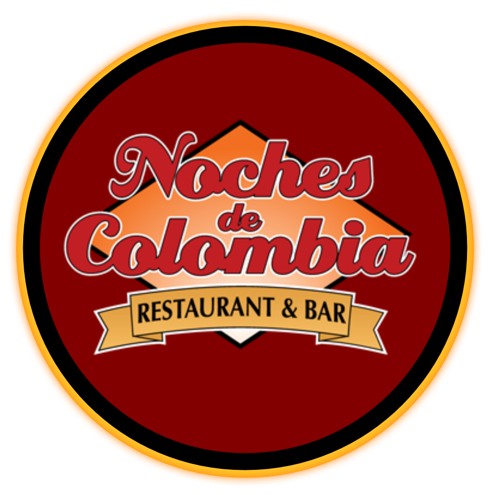

<ion-split-pane (click)="statusLogLang()">
  <ion-menu contentId="content">
    <ion-header>
      <ion-toolbar color="primary">
          <ion-footer *ngIf="language == 'es'" no-border> 
              <ion-title>Principal</ion-title>
          </ion-footer>
          <ion-footer *ngIf="language == 'en'" no-border>
              <ion-title>Main</ion-title>
          </ion-footer>
      </ion-toolbar>
    </ion-header>

    <ion-content>
      <ion-footer *ngIf="language == 'es'" no-border>
          <ion-item>
              <ion-label color="light">Español / Inglés</ion-label>
              <ion-toggle slot="start" [(ngModel)]="notify" (ngModelChange)="select($event)"></ion-toggle>
            </ion-item>
      
              <ion-footer *ngIf="nickname == '' " no-border>
                <ion-menu-toggle auto-hide="false" *ngFor="let page of pagesnotLogged">
                    <ion-item [routerLink]="page.url" routerDirection="root" [class.active-item]="selectedPath.startsWith(page.url)">
                      <ion-icon color="light" name="home" slot="start" *ngIf=" page.title == 'Home' "></ion-icon>
                      <ion-label color="light" *ngIf=" page.title == 'Home' ">Inicio</ion-label>
                      <ion-icon color="light" name="person" slot="start" *ngIf=" page.title == 'Registro' "></ion-icon>
                      <ion-label color="light" *ngIf=" page.title == 'Registro' ">Registro</ion-label>
                      <ion-icon color="light" name="log-in" slot="start" *ngIf=" page.title == 'Login' "></ion-icon>
                      <ion-label color="light" *ngIf=" page.title == 'Login' ">Inicio de Sesión</ion-label>
                    </ion-item>
                </ion-menu-toggle>
              </ion-footer>
              
              <ion-footer *ngIf="nickname != '' " no-border>
                <ion-menu-toggle auto-hide="false" *ngFor="let page of pagesLogged">
                  <ion-item [routerLink]="page.url" routerDirection="root" [class.active-item]="selectedPath.startsWith(page.url)">
                    <ion-icon color="light" name="home" slot="start" *ngIf=" page.title == 'Home' "></ion-icon>
                    <ion-label color="light" *ngIf=" page.title == 'Home' ">Inicio</ion-label>
                    <ion-icon color="light" name="mail-open" slot="start" *ngIf=" page.title == 'Mis mensajes' "></ion-icon>
                    <ion-label color="light" *ngIf=" page.title == 'Mis mensajes' ">Mis mensajes</ion-label>
                    <ion-icon color="light" name="contact" slot="start" *ngIf=" page.title == 'Mi perfil' "></ion-icon>
                    <ion-label color="light" *ngIf=" page.title == 'Mi perfil' ">Mi perfil</ion-label>
                    <ion-icon color="light" name="log-out" slot="start" *ngIf=" page.title == 'Salir' "></ion-icon>
                    <ion-label color="light" *ngIf=" page.title == 'Salir' " (click)="logout()">Cerrar Sesión</ion-label>
                  </ion-item>
                </ion-menu-toggle>
              </ion-footer>
            
      </ion-footer>
      <ion-footer *ngIf="language == 'en'" no-border>
          <ion-item>
              <ion-label color="light">Spanish / English</ion-label>
              <ion-toggle slot="start" [(ngModel)]="notify" (ngModelChange)="select($event)"></ion-toggle>
            </ion-item>
      
            <ion-footer *ngIf="nickname == '' " no-border>
                <ion-menu-toggle auto-hide="false" *ngFor="let page of pagesnotLogged">
                    <ion-item [routerLink]="page.url" routerDirection="root" [class.active-item]="selectedPath.startsWith(page.url)">
                      <ion-icon color="light" name="home" slot="start" *ngIf=" page.title == 'Home' "></ion-icon>
                      <ion-label color="light" *ngIf=" page.title == 'Home' ">Home</ion-label>
                      <ion-icon color="light" name="person" slot="start" *ngIf=" page.title == 'Registro' "></ion-icon>
                      <ion-label color="light" *ngIf=" page.title == 'Registro' ">Register</ion-label>
                      <ion-icon color="light" name="log-in" slot="start" *ngIf=" page.title == 'Login' "></ion-icon>
                      <ion-label color="light" *ngIf=" page.title == 'Login' ">Login</ion-label>
                    </ion-item>
                </ion-menu-toggle>
              </ion-footer>
              
              <ion-footer *ngIf="nickname != '' " no-border>
                <ion-menu-toggle auto-hide="false" *ngFor="let page of pagesLogged">
                  <ion-item [routerLink]="page.url" routerDirection="root" [class.active-item]="selectedPath.startsWith(page.url)">
                    <ion-icon color="light" name="home" slot="start" *ngIf=" page.title == 'Home' "></ion-icon>
                    <ion-label color="light" *ngIf=" page.title == 'Home' ">Home</ion-label>
                    <ion-icon color="light" name="mail-open" slot="start" *ngIf=" page.title == 'Mis mensajes' "></ion-icon>
                    <ion-label color="light" *ngIf=" page.title == 'Mis mensajes' ">My Messages</ion-label>
                    <ion-icon color="light" name="contact" slot="start" *ngIf=" page.title == 'Mi perfil' "></ion-icon>
                    <ion-label color="light" *ngIf=" page.title == 'Mi perfil' ">My Profile</ion-label>
                    <ion-icon color="light" name="log-out" slot="start" *ngIf=" page.title == 'Salir' "></ion-icon>
                    <ion-label color="light" *ngIf=" page.title == 'Salir' " (click)="logout()">Logout</ion-label>
                  </ion-item>
                </ion-menu-toggle>
              </ion-footer>
              
            
      </ion-footer>
    </ion-content>
  </ion-menu>
  <ion-router-outlet id="content" main></ion-router-outlet>
</ion-split-pane>